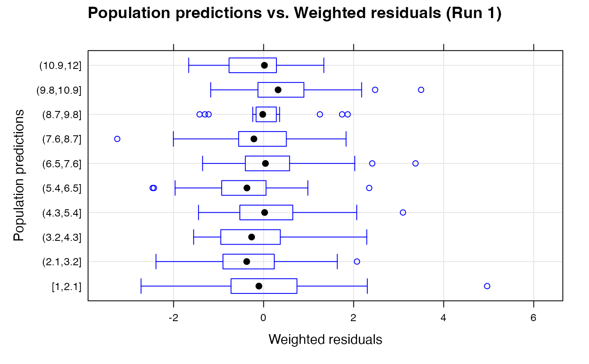

R/wres.vs.pred.bw.R
wres.vs.pred.bw.RdThis creates a box and whisker plot of weighted residuals (WRES) vs
population predictions (PRED), and is a specific function in Xpose 4. It is
a wrapper encapsulating arguments to the xpose.plot.bw function. Most
of the options take their default values from xpose.data object but may be
overridden by supplying them as arguments.
wres.vs.pred.bw(object, ...)An xpose.data object.
Other arguments passed to link{xpose.plot.bw}.
Returns a box-and-whisker plot of WRES vs PRED.
This creates a box and whisker plot of weighted residuals (WRES) vs
population predictions (PRED), and is a specific function in Xpose 4. It is
a wrapper encapsulating arguments to the xpose.plot.bw function. Most
of the options take their default values from xpose.data object but may be
overridden by supplying them as arguments.
A wide array of extra options controlling bwplots are available. See
xpose.plot.bw and xpose.panel.bw for details.
xpose.plot.bw, xpose.panel.bw,
bwplot, xpose.prefs-class,
xpose.data-class
Other specific functions:
absval.cwres.vs.cov.bw(),
absval.cwres.vs.pred.by.cov(),
absval.cwres.vs.pred(),
absval.iwres.cwres.vs.ipred.pred(),
absval.iwres.vs.cov.bw(),
absval.iwres.vs.idv(),
absval.iwres.vs.ipred.by.cov(),
absval.iwres.vs.ipred(),
absval.iwres.vs.pred(),
absval.wres.vs.cov.bw(),
absval.wres.vs.idv(),
absval.wres.vs.pred.by.cov(),
absval.wres.vs.pred(),
absval_delta_vs_cov_model_comp,
addit.gof(),
autocorr.cwres(),
autocorr.iwres(),
autocorr.wres(),
basic.gof(),
basic.model.comp(),
cat.dv.vs.idv.sb(),
cat.pc(),
cov.splom(),
cwres.dist.hist(),
cwres.dist.qq(),
cwres.vs.cov(),
cwres.vs.idv.bw(),
cwres.vs.idv(),
cwres.vs.pred.bw(),
cwres.vs.pred(),
cwres.wres.vs.idv(),
cwres.wres.vs.pred(),
dOFV.vs.cov(),
dOFV.vs.id(),
dOFV1.vs.dOFV2(),
data.checkout(),
dv.preds.vs.idv(),
dv.vs.idv(),
dv.vs.ipred.by.cov(),
dv.vs.ipred.by.idv(),
dv.vs.ipred(),
dv.vs.pred.by.cov(),
dv.vs.pred.by.idv(),
dv.vs.pred.ipred(),
dv.vs.pred(),
gof(),
ind.plots.cwres.hist(),
ind.plots.cwres.qq(),
ind.plots(),
ipred.vs.idv(),
iwres.dist.hist(),
iwres.dist.qq(),
iwres.vs.idv(),
kaplan.plot(),
par_cov_hist,
par_cov_qq,
parm.vs.cov(),
parm.vs.parm(),
pred.vs.idv(),
ranpar.vs.cov(),
runsum(),
wres.dist.hist(),
wres.dist.qq(),
wres.vs.idv.bw(),
wres.vs.idv(),
wres.vs.pred(),
xpose.VPC.both(),
xpose.VPC.categorical(),
xpose.VPC(),
xpose4-package
## Here we load the example xpose database
xpdb <- simpraz.xpdb
wres.vs.pred.bw(xpdb)
